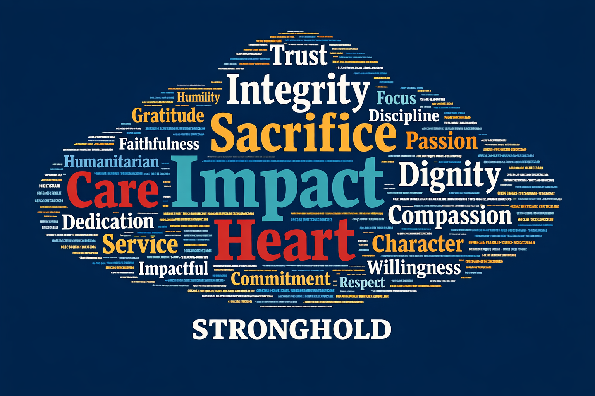

What's Working
Stronghold has built a foundation that most nonprofits will never achieve. The mission resonates. The supporters believe. The content is genuinely newsworthy.
World-Class Supporter Loyalty
341 supporters responded to our survey. The results reveal an organization with exceptional trust and advocacy potential.
Above 70 is "excellent"
Would actively recommend
Easy or Very Easy to donate
Only 11 of 341 respondents
What This Means
89% of your supporters would actively recommend Stronghold to others. This is a referral engine waiting to be activated. There is no referral program. 143 supporters said they want volunteer or advocacy opportunities that do not currently exist.
The Podcast Channel
46% of supporters found Stronghold through podcast appearances. This is the dominant acquisition channel and a rare asset most organizations could never replicate.
Discovery Channels
| Podcasts / Interviews | 46.3% |
| Social Media | 39.6% |
| News Articles | 6.7% |
| Word of Mouth | 5.0% |
| Other | 2.4% |
Key Podcast Partners
Jocko Podcast - 240 backlinks, veteran community, higher lifetime value per donor
MrBallen - Highest volume acquisition source, 22,556 attributed donations (individual transactions with MrBallen UTM attribution)
Black Rifle Coffee, Iced Coffee Hour, Bob Menery - Additional reach into aligned audiences
Podcast donors show higher engagement and lower churn than average.
Genuine Content Credibility
Stronghold produces first-person field dispatches from active conflict zones. This content is genuinely newsworthy and unlike anything peer organizations produce.
Backlink Profile
Editorial links from high-authority sources demonstrate real credibility:
| Source | Domain Rating |
|---|---|
| YouTube | 99/100 |
| Fox News | 91/100 |
| Charity Navigator | 90/100 |
| Jocko Podcast Network | 240 links |
Domain Rating (0-100): Measures authority of sites that link to yours. Higher = more valuable link.
260 total referring domains. The legitimate backlink profile is strong and editorially earned.
Social Engagement
Instagram outperforms Facebook by nearly 3:1 in views and 5.7:1 in follower growth (90-day period):
| Platform | Views | New Followers |
|---|---|---|
| 172,011 | 644 | |
| 59,232 | 113 |
Sentiment across both platforms is overwhelmingly positive.
What Supporters Want
The survey reveals clear demand signals that should drive content and engagement strategy.
Impact Reports
54% of respondents
Detailed breakdowns of where money goes and what it accomplishes.
Videos from the Field
51% of respondents
Real footage from operations. Raw, authentic visual content.
More Field Stories
47.8% of respondents
Written dispatches from operations. The backbone of the content calendar.
Educational Content
44% of respondents
Context about regions, conflicts, and the work being done.
Volunteer Opportunities
41.9% of respondents
143 supporters want to do more than donate. Massive engagement opportunity.
Behind-the-Scenes
39.9% of respondents
The team, the prep, the real human moments.
Merchandise Demand
Significant unprompted demand for t-shirts, hats, and branded gear. Multiple supporters mentioned wearing Stronghold shirts "until they fell apart" to spread the message. This is both a revenue stream and a marketing channel.
What Supporters Say
How supporters and the internal team describe Stronghold in their own words.
How Supporters Describe Stronghold
How the Team Describes Stronghold

Where Our Supporters Are
Geographic distribution of Stronghold supporters across the United States. Hover over states for details.
Donor Motivations
Understanding why people give is essential for messaging and acquisition strategy.
Story and Mission Impact
48.4% were moved by a specific rescue story
Narrative storytelling is the single most powerful conversion tool. Lead with stories, not statistics.
Leadership Credibility
42.5% cite trust in leadership
Ephraim's SEAL background and operator track record are foundational trust signals.
Top Geographic Markets
Supporter concentration by state (survey data):
| 1. Texas | 10.9% |
| 2. Florida | 8.3% |
| 3. California | 8.0% |
| 4. Pennsylvania | 4.5% |
| 5. Virginia | 4.5% |
The South dominates at 43% of US supporters, aligning with veteran and military-connected audiences.